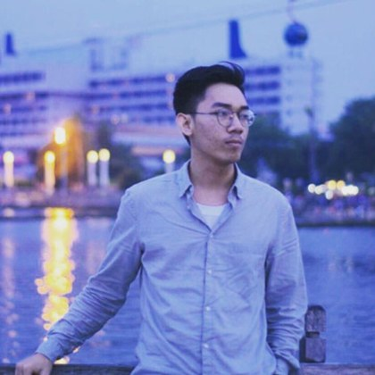
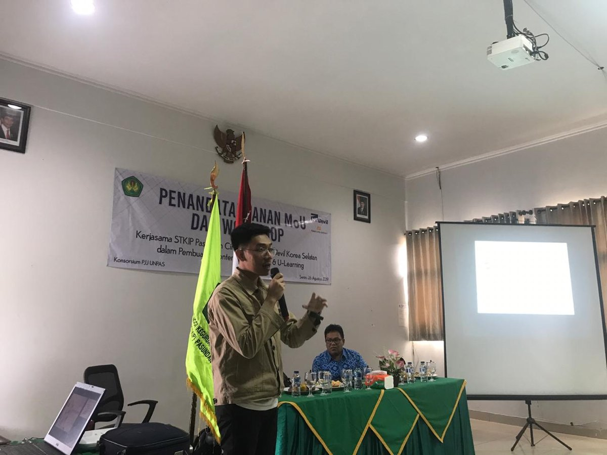

Moch. Agung Anugrah
Academic operations · Procurement · Curriculum design · Content development · IT project coordination
Results-driven professional experienced in day-to-day operations, procurement, vendor coordination, budget monitoring and resource management, with a background in curriculum and content development. I coordinate projects, keep documentation and reporting in order, and work across teams with a focus on operational efficiency, cost control and service quality.

From IT to operations, one role leading to the next
Select a bar to jump to that role’s details.
Experience
Senior Academic Operational (Procurement)
Sparks Preschool (Seven Retail) · Jakarta
Jun 2025 – Nov 2025
Senior Academic Operational (Procurement)
Sparks Preschool (Seven Retail) · Jakarta
- Manage academic and school operations, coordinating programs, schedules, resources, teacher training and daily operational requirements.
- Manage operational budgets and expenses, ensuring proper allocation, monitoring expenditures and alignment with approved budgets.
- Handle purchasing and procurement, including sourcing school supplies, requesting quotations, coordinating vendors and monitoring purchase processes.
- Manage vendor coordination and relationships to ensure timely delivery, competitive pricing and fulfillment of school requirements.
- Support finance and budget administration: budget requests, expense monitoring, payment documentation and financial records.
- Prepare operational and financial reports while maintaining accurate documentation and compliance with internal SOPs and policies.
Project Coordinator B2B (Academic Operational)
Kalananti by Ruangguru · Jakarta
Feb 2025 – Jun 2025
Project Coordinator B2B (Academic Operational)
Kalananti by Ruangguru · Jakarta
- Managed and oversaw the execution of educational programs in collaboration with schools.
- Ensured program implementation aligned with academic standards and curriculum requirements.
- Monitored and evaluated the effectiveness of learning programs and gave feedback for improvement.
- Communicated with schools, internal teams and other stakeholders to keep operations running smoothly.
- Handled administrative and technical issues related to academic operations.
- Maintained attendance records and analyzed student performance data.
- Prepared reports on program progress and academic achievements.
- Managed multiple projects and ensured timely execution.
- Collaborated with business and sales teams to explain program features.
- Coordinated and prepared project requirements for smooth implementation.
Senior Curriculum Designer
Skill Academy by Ruangguru · Jakarta
Apr 2022 – Feb 2025
Senior Curriculum Designer
Skill Academy by Ruangguru · Jakarta
- Researched course value propositions, market competitiveness and customer insights.
- Designed courses aligned with business objectives and learner needs.
- Supervised and tracked progress of multiple content development projects.
- Created course materials and adapted content to appropriate learning methods.
- Defined course goals, target audience, prerequisites and delivery strategies.
- Reported project status and key milestones to content management.
- Developed and maintained project timelines to ensure on-time delivery.
Content Development
Skill Academy by Ruangguru · Jakarta
Sep 2019 – Apr 2022
Content Development
Skill Academy by Ruangguru · Jakarta
- Analyzed course objectives, target audience, prerequisites and resources to determine effective delivery methods.
- Collaborated with subject matter experts to design interactive, engaging learning content.
- Developed and modified instructional materials to meet specific, measurable learning outcomes.
- Designed assessments aligned with course objectives and evaluation criteria.
- Ran quality assurance checks and gave feedback to improve video learning content.
- Participated in video production for educational modules.
- Created content for marketing and business needs, including promotional materials and campaign assets.
- Aligned educational content with broader business goals and learner engagement strategies.
Technical Lead
Polaris Edu Partners · Jakarta
Jan 2018 – Sep 2019
Technical Lead
Polaris Edu Partners · Jakarta
- Reported on tasks and achieved daily, weekly and monthly goals.
- Defined project requirements and developed work schedules for the team.
- Identified and resolved technical issues with effective solutions and workarounds.
- Collaborated with stakeholders, IT teams and business units to keep projects aligned.
- Designed and implemented client systems using in-house technology.
- Provided product training and technical support to clients.
IT Support
Polaris Edu Partners · Jakarta
Feb 2017 – Jan 2018
IT Support
Polaris Edu Partners · Jakarta
- Monitored and maintained computer systems, servers, networks and LMS.
- Provided technical assistance and troubleshooting support to clients.
- Created user manuals and documentation for internal and client use.
- Tested new hardware and systems prior to deployment.
- Installed and configured software, hardware, printers and networks.
Project Leader, Web Development (Freelance)
Ministry of Marine Affairs and Fisheries Indonesia and Campus Cyber Indonesia
2018 – 2023
Project Leader, Web Development (Freelance)
Ministry of Marine Affairs and Fisheries Indonesia and Campus Cyber Indonesia
- Defined the scope, objectives, budget and schedule of the project with the client and the team.
- Allocated resources such as hardware, software and manpower.
- Coordinated and communicated tasks and responsibilities to team members.
- Monitored and reported project progress regularly to the client and management.
- Resolved issues and obstacles that arose during the project.
- Evaluated and reviewed project outcomes and gave feedback to the team.
IT Web Developer (Internship)
DISKOMINFO · Bandung
Jul 2015 – Aug 2015
IT Web Developer (Internship)
DISKOMINFO · Bandung
- Gathered system requirements and conducted user needs analysis.
- Developed internal web-based applications using the CodeIgniter (CI) framework.
System Analyst (Internship)
KPSBU Lembang · Bandung
Jan 2014 – Jul 2014
System Analyst (Internship)
KPSBU Lembang · Bandung
- Analyzed existing systems and workflows to identify inefficiencies.
- Proposed and implemented system improvements using appropriate technologies.
- Supported users in adapting to newly developed systems.
Projects
Project file
A sample of my work, available to view on Google Drive.
Speaking & workshops

Skills & tools
Core skills
Ways of working
Tools
Education
Bachelor of Informatics Engineering
Faculty of Engineering, Pasundan University Bandung · 2012 – 2016 · GPA 3.23 / 4.00
Contact
- Emailmochagunganugrah@gmail.com
- WhatsApp / phone+62 812-1489-4615
- Based inMampang Pela, Jakarta Selatan